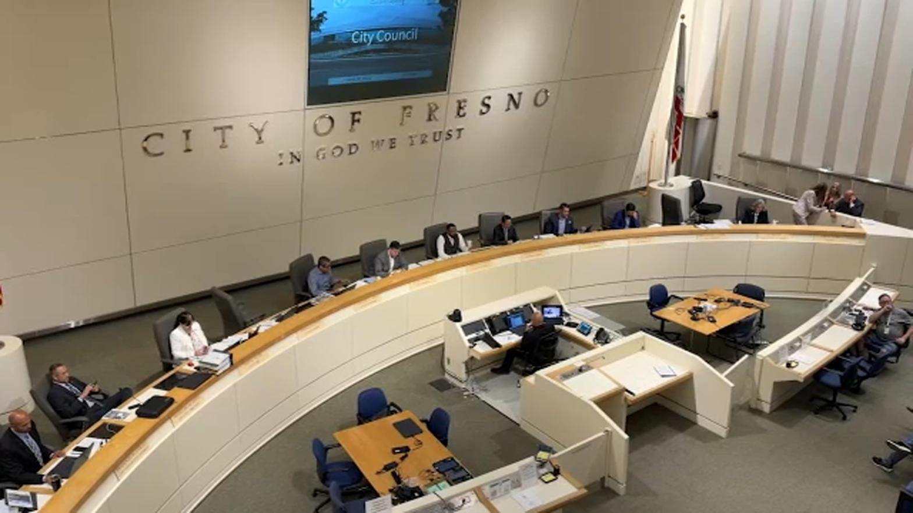

Lord Jesus, keep us from becoming a communications desk for any paper, party, or bureau. Give us love of neighbor and a spine for truth. Amen.
This morning The Sacramento Bee posted an opinion piece by Chris Crawford, senior director of civic strategies at Interfaith America. The headline asked religious leaders to strengthen trust in democracy ahead of the midterms. The photograph was a voter at a church polling place under stained glass. The copy was smooth. The argument was not.
Anyone with ordinary civic responsibility can see the moves. They are not subtle. They are the old tricks of a narrator who wants the church to carry water and call it ministry.
Ephesians 5:11-13
Take no part in the worthless deeds of evil and darkness; instead, expose them. It is shameful even to talk about the things that ungodly people do in secret. But their evil intentions will be exposed when the light shines on them.
Jesus does not tell His people to soothe a narrative. He tells them to expose it. That is the charge of this sermon. Hold the writer and the paper to account for the fallacies they published in public.
First fallacy. Begging the question.
The piece says President Donald Trump "levied baseless fraud claims against the state's elections system." Baseless is the verdict the writer needed before the argument could start. A contested public claim is treated as already tried and buried. That is not reporting. That is a gavel dropped on the first page so the rest of the column can proceed as if the courtroom is closed.
If a claim is false, prove it with records, chain of custody, statutes, and counts that a citizen can check. If a claim is unproven, say unproven. Do not baptize your conclusion as a fact and then scold the public for distrust.
Second fallacy. Motte and bailey on the word democracy.
The motte is "free and fair elections," a phrase almost no one in this room wants to burn. The bailey is something narrower. Trust in democracy, in this column, means trust the present administrators, partner with election officials, repeat what those officials call accurate, and treat skepticism itself as the disease.
The Bee even reports that 41 percent of California voters were not confident elections would be free from federal interference, and that this number existed before the claims the writer calls baseless. Then the column treats that distrust as cynicism to be cured by clergy messengers. That is a category error. Distrust can be lazy. It can also be a citizen doing the job the First Amendment assumes a citizen will do.
Related polling from the same season shows a hard partisan split on who is trusted and what is feared. The column lifts one number and leaves the split on the floor. That is selective evidence. It is a cousin of the half-truth.
Isaiah 5:20
What sorrow for those who say that evil is good and good is evil, that dark is light and light is dark, that bitter is sweet and sweet is bitter.
Third fallacy. Equivocation on nonpartisan.
The writer calls faith communities "trusted, nonpartisan civic partners." In the next breath the examples are not neutral. Houses of worship in Minneapolis are praised as meeting places for organizers standing up to an ICE crackdown. Unnamed "religious movements" are condemned for "extremist and prejudicial ideologies" that "weaken democratic institutions." One set of clergy is a calm partner. The other set is a threat. The reader is not given names, texts, or charges. The smear is left hanging so the author's own shop, Interfaith America, can stand in the light as the healthy path.
That is poisoning the well, and it is a false dichotomy. Either you join the approved interfaith civic program or you are fueling exclusion. The Lord Jesus never accepted that kind of fork. He named the teachers of religious law when they used holy office as costume.
Matthew 23:27-28
What sorrow awaits you teachers of religious law and you Pharisees. Hypocrites! For you are like whitewashed tombs, beautiful on the outside but filled on the inside with dead people’s bones and all sorts of impurity. Outwardly you look like righteous people, but inwardly your hearts are filled with hypocrisy and lawlessness.

Fourth fallacy. The captured messenger.
The column reminds readers that religious leaders "have long served as trusted messengers during public challenges, including efforts to address vaccine hesitancy during COVID." There is the model, stated in the open. Clergy already amplified an official public-health line. Now they are asked to amplify an official elections line. Register voters. Locate polling places. Track changes in election law. Share "accurate" information. Build relationships with officials. Stand outside with water so participation feels safer.
Some of those acts can be neighbor-love. A ride to the polls is not a sin. A cup of water is not a sin. Recruiting honest poll workers is not a sin. The fallacy is the appeal to authority dressed as pastoral care. Who decides what is accurate? In this scheme, the same institutions the public is already split over. The clergy become the last trusted face on a message written elsewhere. That is not prophecy. That is public relations.
Leviticus 19:11-12
Do not steal. Do not deceive or cheat one another. Do not bring shame on the name of your God by using it to swear falsely. I am the Lord.
Do not use the Name to swear a newspaper's case. Do not put stained glass behind a claim you have not examined. The photograph in the Bee post is the visual version of that temptation. Church as backdrop. Ballot box as altar. Headline as benediction.
Fifth fallacy. Appeal to fear, then a sales pitch.
The writer points to headlines about political interference, potential violence, and an increased law enforcement presence, including ICE, that "may leave some voters afraid to show up." Fear is named. Then the product is offered. A pastor, rabbi, imam, or lay volunteer with water and a warm welcome. The presence "sends a simple message: You belong here, and your voice counts."
Belonging is not the same as an honest count. Warmth is not the same as a canvass. If violence is a real risk, say so with incidents, dates, and jurisdictions. If ICE at a polling place is a legal question, cite the statute. Do not float a fog of dread and then recruit collars as the calm brand. That is misleading vividness married to an appeal to fear.
The fire-shelter example works the same way. Los Angeles clergy opened doors after the Palisades Fire. Good. Mercy after a fire does not prove that the same instinct should now "protect our democracy" by lining up with election officials and an interfaith strategy shop. That is a false analogy. Bandaging a burn is not the same work as certifying a narrative.
What Jesus actually claims.
The Bee does not ask what Christ requires of a preacher. It asks what democracy, as the writer defines it, requires of a preacher. That inversion is the heart of the offense. The church does not exist to raise the trust scores of institutions. The church exists to tell the truth about God and man, including the truth that rulers, papers, and religious professionals all stand under judgment.
John 8:31-32
Jesus said to the people who believed in him, “You are truly my disciples if you remain faithful to my teachings. And you will know the truth, and the truth will set you free.”
John 18:37
Pilate said, “So you are a king?” Jesus responded, “You say I am a king. Actually, I was born and came into the world to testify to the truth. All who love the truth recognize that what I say is true.”
Pilate had process. Pilate had a palace. Pilate still asked what truth was. Jesus did not offer him a partnership memo. He testified. That is the pattern. A disciple may vote. A disciple may serve as a poll worker. A disciple may refuse to become a mascot.
Proverbs 12:22
The Lord detests lying lips, but he delights in those who tell the truth.
The charge.
Chris Crawford and The Sacramento Bee: hold yourselves to account. You used loaded language. You begged the question. You sold a motte and occupied a bailey. You called yourselves nonpartisan while sorting clergy into the approved and the dangerous. You treated a COVID messaging campaign as the template for election messaging. You used fear and stained glass. You asked the church to make participation feel safe instead of making claims that can be checked. That is easy to see through. It is also disgusting, because it treats the Name as inventory.
Nobody has to care what an opinion page thinks. The facts remain the facts whether a column blesses them or not. If ballots are secure, show the work. If federal interference is a real fear for 41 percent of California voters, do not scold the fear and then hire clergy to manage it. If some religious movements are doing evil, name the evil. If you will not name it, do not wave it like a club.
People of the Tower District: do not outsource your conscience to a McClatchy page. Vote if you are eligible. Watch the count. Read a statute before you repeat a slogan. Give water to a neighbor because he is a neighbor, not because a civic-strategies director drafted you. And when a narrator puts the church in the frame to sell trust in himself, call him what Jesus called the polished men of His own day. Say it in the open.
Luke 8:17
For all that is secret will eventually be brought into the open, and everything that is concealed will be brought to light and made known to all.
The Lord Jesus calls His people to love the truth. The manipulative narrator is not owed a pulpit. Amen.
Sources
- Chris Crawford, "Religious leaders can strengthen trust in democracy ahead of midterm elections | Opinion," The Sacramento Bee / McClatchy, September 7, 2026. sacbee.com/opinion/op-ed/article317007747.html. Author identified as senior director of civic strategies at Interfaith America.
- The 41 percent figure is the article's own claim about California voters and federal interference before the claims it calls baseless. Related public polling in the same season includes UC Berkeley IGS / Los Angeles Times coverage of partisan splits on election confidence and fears of federal meddling. Those splits are reported in the press and are not invented here.
- No criminal charge is made against the author or the newspaper. The rebuke is for public rhetoric and fallacy.
Photographs
- Fresno City Hall exterior. Public civic building.
- Fresno City Council chambers, a public meeting room. Wall text reads In God We Trust.
- Washington Monument and Tidal Basin, National Mall, Washington, D.C., public grounds.
- Tower Theatre facade, Tower District, Fresno. Public street view.